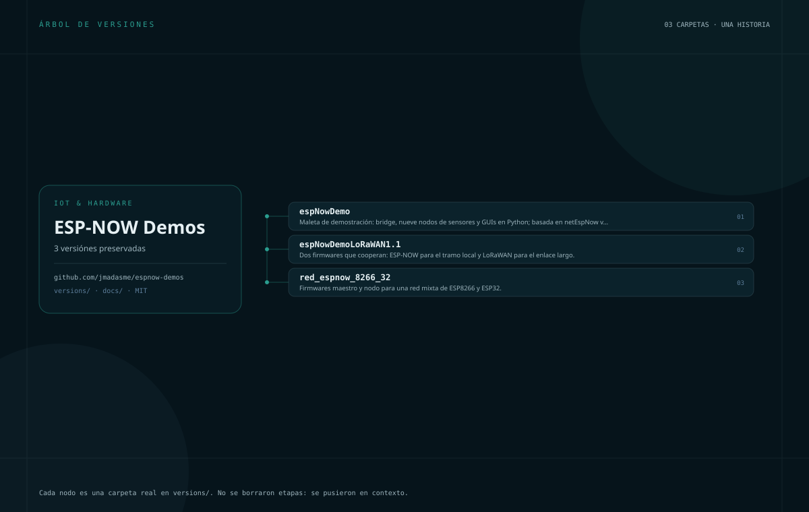

espNowDemo
33 archivosMaleta de demostración: bridge, nueve nodos de sensores y GUIs en Python; basada en netEspNow v1.1-fix1.
Ver carpetaDemos de campo con ESP-NOW y LoRaWAN: bridge, nodos, GUI en Python y dos radios cooperando.

Tres demos que muestran cómo conectar sensores en campo: una maleta con bridge y nueve nodos, un enlace ESP-NOW + LoRaWAN con dos firmwares y una red mixta ESP8266/ESP32.
Una demo de sensores en una feria o en una sala no puede depender del WiFi del lugar ni de una nube que a veces no carga.
ESP-NOW para el tramo local, LoRaWAN cuando la distancia excede el alcance y una GUI de escritorio para mostrar el estado.
Recorrido por espnow-demos: una red ESP-NOW autodescubierta donde un NodeMCU bridge interroga a nueve nodos sensores y publica las respuestas por serial. El video sigue el protocolo de 13 bytes, el aprendizaje de MAC por broadcast, el nodo de vibración y la GUI PyQt6 que convierte el log en tarjetas.
Recorrido por espnow-demos: una red ESP-NOW autodescubierta donde un NodeMCU bridge interroga a nueve nodos sensores y publica las respuestas por serial. El video sigue el protocolo de 13 bytes, el aprendizaje de MAC por broadcast, el nodo de vibración y la GUI PyQt6 que convierte el log en tarjetas.
Los fragmentos corresponden al firmware y a la GUI reales del repositorio.
Cada carpeta conserva una etapa del proyecto. No se borraron las anteriores: se pusieron en contexto.
Maleta de demostración: bridge, nueve nodos de sensores y GUIs en Python; basada en netEspNow v1.1-fix1.
Ver carpetaDos firmwares que cooperan: ESP-NOW para el tramo local y LoRaWAN para el enlace largo.
🔒 privadaFirmwares maestro y nodo para una red mixta de ESP8266 y ESP32.
🔒 privadaespnow-demos agrupa tres demostraciones de ESP-NOW pensadas para funcionar sin la WiFi del lugar ni servicios en la nube. La pieza principal es una red en estrella de nueve nodos ESP8266 —un bridge y ocho sensores— que se consulta desde una interfaz PyQt6 en un portátil; las otras dos versiones exploran un puente LoRaWAN y una red mixta ESP8266/ESP32.
Está dirigido a quien necesita una demo transportable para feria, aula o sala de reuniones, donde la red del edificio no es confiable. Importa porque muestra el ciclo completo con hardware barato: autodescubrimiento de MAC, tramas binarias compactas, sensores digitales, I2C y analógicos, y una GUI local. También deja a la vista los huecos: sin cifrado, sin watchdog y sin documentación en una de las variantes.
El README original de la versión de referencia, completo.
Versión: netEspNow v1.1-fix1 · Topología: Estrella · Plataforma: ESP8266 (NodeMCU v3 / ESP-12E)
espNowDemo es una red de sensores inalámbrica basada en ESP-NOW pensada para ferias, demos y maletas didácticas. Un nodo Bridge (maestro) interroga secuencialmente a una serie de nodos sensores (esclavos) y muestra los datos por el puerto Serial (UART0, 115200 baud). El operador humano controla la red con comandos de texto.
Sigue la filosofía "simple y robusta" de la versión v1.1:
🖥️ Panel de control (GUI): este proyecto incluye una aplicación de escritorio en Python (
espnow_gui.py, PyQt6) para operar la red con tarjetas visuales por nodo, botón de consulta circular y efecto hover. Ver docs/gui.md.🚰 Extensión Zigbee (GUI de válvulas):
valvulas_gui.py(+valvulas.py), una GUI con el mismo estilo RAF que controla las válvulas de agua Zigbee (SONOFF SWV-NH) y el interruptor ON/OFF vía MQTT/Zigbee2MQTT. Se ejecuta en la Raspberry Pi que corre el broker (por defecto127.0.0.1:1883, configurable):python3 valvulas_gui.py. Requierepip install paho-mqtt+ PyQt6.📡 Nodo LoRaWAN (GUI de radio):
cubecell_gui.py(PyQt6) es el panel de escritorio estilo RAF para operar el nodo Heltec CubeCell HTCC-AB01 conectado por USB (CP2102, 9600 8N1): terminal serial en vivo, envío de datos (HEX o ASCII), recepción de downlinks e indicadores de sesión/radio. Detección automática del puerto del nodo. Ejecutar:python3 cubecell_gui.py. Ver docs/gui_cubecell.md.
La red está formada por 9 firmwares, todos para ESP8266 NodeMCU v3 (ESP-12E):
| Firmware | Rol | ID | Descripción |
|---|---|---|---|
firmware_bridge |
Maestro/Bridge | 5 (self) | Interroga a los nodos, muestra datos por Serial, gestiona comandos. |
firmware_nodo_0 … firmware_nodo_4 |
Esclavo universal | 0…4 | Lee 1 entrada digital + 1 entrada analógica (ADC). |
firmware_nodo_6 |
Esclavo DS18B20 | 6 | Lee temperatura con DS18B20 (OneWire). |
firmware_nodo_7 |
Esclavo GY-906 | 7 | Lee temperatura IR sin contacto con MLX90614 (I2C). |
firmware_nodo_8 |
Esclavo GY-61 | 8 | Lee aceleración del eje X (ADXL335) y clasifica la vibración en tiempo real. |
Los 5 nodos universales son exactamente el mismo código; solo cambia
#define NODE_ID. Esto permite "clonar" un nodo genérico y cablearle distintos
sensores físicos según la necesidad.
El mapeo de sensores no está hardcodeado en el firmware: cualquier nodo universal puede leer cualquier sensor compatible. La asignación recomendada para la maleta es:
| Nodo | Sensor | Pin | Tipo de lectura |
|---|---|---|---|
| 0 | Reed magnético MC-38 (puerta) | D2 (GPIO4) | Digital (pull-up) |
| 1 | PIR HC-SR501 (movimiento) | D2 (GPIO4) | Digital |
| 2 | LDR (luz) | A0 | Analógica (0–1023) |
| 3 | MQ135 (calidad de aire) | A0 | Analógica (0–1023) |
| 4 | LM35 / TMP36 (temperatura) | A0 | Analógica (0–1023) |
| 6 | DS18B20 (temperatura, sonda acero) | D2 (GPIO4) | OneWire (digital) |
| 7 | GY-906 / MLX90614 (temperatura IR sin contacto) | D1 (GPIO5) + D2 (GPIO4) | I2C (dirección 0x5A) |
| 8 | GY-61 / ADXL335 (acelerómetro 3 ejes / vibración) | A0 (X_OUT) | Analógica (eje X, 0–1023) |
esp8266:esp8266:nodemcuv23V3, o pin VIN (5–9 V). Lógica a 3.3 V.⚠️ El ADC del ESP8266 mide 0 – 1.0 V de forma nativa. La placa NodeMCU suele incluir un divisor resistivo (220 kΩ / 100 kΩ) que amplía el rango a 0 – 3.3 V. Ver Advertencias y precauciones.
La red usa una topología en estrella con un único maestro (Bridge):
msg_type=0) dirigido a un node_id,
por broadcast FF:FF:FF:FF:FF:FF si desconoce su MAC, o directo si ya la aprendió.node_id coincide lee sus sensores en ese instante y responde
con un mensaje response (msg_type=1 universal, msg_type=2 DS18B20,
msg_type=3 IR/GY-906 o msg_type=4 acelerómetro/GY-61).loop().ping.Mensaje universal — 13 bytes (EspNowMessage), usado por Bridge y nodos 0–4:
typedef struct __attribute__((packed)) {
uint8_t msg_type; // 0 = request (bridge→nodo), 1 = response (nodo→bridge)
uint8_t node_id; // ID destino/origen
uint8_t gpio_state; // estado digital 0/1
uint16_t adc_value; // valor ADC 0–1023
uint32_t counter; // contador correlativo del nodo
uint32_t uptime_ms; // tiempo de actividad del nodo (ms)
} EspNowMessage;
Mensaje de sensor — 14 bytes (EspNowSensorMessage / EspNowDhtMessage), nodo 6:
typedef struct __attribute__((packed)) {
uint8_t msg_type; // 2 = respuesta de sensor (nodo 6)
uint8_t node_id; // 6
int16_t temp_x10; // temperatura °C * 10 (ej: 245 = 24.5 °C)
int16_t hum_x10; // humedad % * 10 (ej: 455 = 45.5 %)
uint32_t counter; // contador correlativo
uint32_t uptime_ms; // tiempo de actividad (ms)
} EspNowSensorMessage;
temp_x10 = -9999 → lectura inválida (sensor desconectado).hum_x10 = -9999 → N/A (el DS18B20 no mide humedad).Mensaje IR (GY-906) — 14 bytes (EspNowIrMessage), nodo 7:
typedef struct __attribute__((packed)) {
uint8_t msg_type; // 3 = respuesta IR (nodo 7)
uint8_t node_id; // 7
int16_t obj_temp_x10; // temperatura del objeto °C * 10
int16_t amb_temp_x10; // temperatura ambiente °C * 10
uint32_t counter; // contador correlativo
uint32_t uptime_ms; // tiempo de actividad (ms)
} EspNowIrMessage;
obj_temp_x10 = -9999 o amb_temp_x10 = -9999 → lectura inválida (error I2C).Mensaje de aceleración/vibración (GY-61) — 16 bytes (EspNowAccelMessage), nodo 8:
typedef struct __attribute__((packed)) {
uint8_t msg_type; // 4 = respuesta de aceleración (nodo 8)
uint8_t node_id; // 8
uint16_t accel_x; // valor X actual (promedio de la ventana, 0–1023)
uint16_t vib_range; // rango de vibración (max - min de la ventana, 0–1023)
uint8_t vib_level; // 0=reposo, 1=vibración baja, 2=media, 3=alta
uint8_t reserved; // reservado (0)
uint32_t counter; // contador correlativo
uint32_t uptime_ms; // tiempo de actividad (ms)
} EspNowAccelMessage;
vib_level: 0 = REPOSO, 1 = VIBRACIÓN BAJA, 2 = VIBRACIÓN MEDIA,
3 = VIBRACIÓN ALTA (según el rango max−min de la ventana de muestras).El Bridge arranca con los slots 0–4, 6, 7 y 8 en estado DESCONOCIDO (MAC en ceros).
Cuando debe interrogar a un nodo desconocido, envía el request por broadcast. Al
recibir la respuesta, aprende la MAC (del campo mac del callback), la guarda en la
tabla y registra un peer directo. A partir de ahí, la comunicación es punto a punto.
El slot 5 queda reservado para el propio Bridge (auto-identificación) y nunca se interroga.
Conecta el Bridge por USB a un ordenador, abre el monitor Serial a 115200 baud y escribe los siguientes comandos (terminados con ENTER):
| Comando | Descripción |
|---|---|
help / ? |
Muestra la lista de comandos disponibles. |
ping <id> |
Interroga una vez a un nodo concreto (0-4, 6-8). |
ping all |
Interroga a todos los nodos en secuencia. |
list |
Muestra la tabla de nodos y su estado (BRIDGE / CONOCIDO / DESCONOCIDO). |
stats |
Muestra estadísticas: requests, respuestas, timeouts y tasa de éxito. |
auto on |
Activa la interrogación automática (cada 3 s). |
auto off |
Desactiva la interrogación automática (solo responde a comandos). |
El Bridge arranca con auto-polling activado (auto on por defecto). Cada 30 s, si
el auto-poll está activo, imprime automáticamente las estadísticas.
| Pin Arduino | GPIO | Modo | Componente conectado | Notas |
|---|---|---|---|---|
| D4 | GPIO2 | OUTPUT | LED_BUILTIN (azul) | Confirmación visual; activo en LOW (LED_ON = LOW). |
| D9 / TX | GPIO1 | OUTPUT | UART0 TX | Serial 115200 baud (hacia el ordenador). |
| D10 / RX | GPIO3 | INPUT | UART0 RX | Serial 115200 baud (desde el ordenador). |
| D5 | GPIO14 | — | (reservado) | Reservado SoftwareSerial RX (Fase 2, LoRaWAN). |
| D6 | GPIO12 | — | (reservado) | Reservado SoftwareSerial TX (Fase 2, LoRaWAN). |
| D2 | GPIO4 | — | (sin uso) | Solo los nodos leen sensores. |
| A0 | — | — | (sin uso) | Solo los nodos leen sensores. |
| 3V3 | — | Power | Alimentación 3.3 V | Salida regulada. |
| GND | — | Power | Tierra común | — |
| VIN/5V | — | Power | Alimentación 5 V | Entrada USB/regulador. |
| Pin Arduino | GPIO | Modo | Componente conectado | Notas |
|---|---|---|---|---|
| D4 | GPIO2 | OUTPUT | LED_BUILTIN (azul) | Heartbeat (parpadea cada 1 s); activo en LOW. |
| D2 | GPIO4 | INPUT_PULLUP | Sensor digital (reed / PIR) | Pull-up interno; el sensor cierra a GND. |
| A0 | — | INPUT (analógico) | Sensor analógico (LDR / MQ135 / LM35) | Lectura 0–1023. |
| D5 | GPIO14 | — | (reservado) | Reservado SoftwareSerial RX (Fase 2). |
| D6 | GPIO12 | — | (reservado) | Reservado SoftwareSerial TX (Fase 2). |
| D9 / TX | GPIO1 | OUTPUT | UART0 TX | Serial de depuración (115200). |
| D10 / RX | GPIO3 | INPUT | UART0 RX | Serial de depuración (115200). |
| 3V3 | — | Power | Alimentación sensores | — |
| GND | — | Power | Tierra común | — |
| Pin Arduino | GPIO | Modo | Componente conectado | Notas |
|---|---|---|---|---|
| D2 | GPIO4 | INPUT | DS18B20 DATA | Bus OneWire; con pull-up 4.7 kΩ a 3V3. |
| 3V3 | — | Power | DS18B20 VCC (rojo) | — |
| GND | — | Power | DS18B20 GND (negro) | — |
| D4 | GPIO2 | — | (libre) | El nodo 6 no usa LED; queda disponible. |
| D5 | GPIO14 | — | (reservado) | Reservado SoftwareSerial RX (Fase 2). |
| D6 | GPIO12 | — | (reservado) | Reservado SoftwareSerial TX (Fase 2). |
| D9 / TX | GPIO1 | OUTPUT | UART0 TX | Serial de depuración (115200). |
| D10 / RX | GPIO3 | INPUT | UART0 RX | Serial de depuración (115200). |
| Pin Arduino | GPIO | Modo | Componente conectado | Notas |
|---|---|---|---|---|
| D2 | GPIO4 | I2C SDA | GY-906 SDA | Bus I2C; el módulo trae pull-ups. |
| D1 | GPIO5 | I2C SCL | GY-906 SCL | Bus I2C; el módulo trae pull-ups. |
| D4 | GPIO2 | OUTPUT | LED_BUILTIN (azul) | Heartbeat (parpadea cada 1 s); activo en LOW. |
| 3V3 | — | Power | GY-906 VIN | El módulo regula a 3.3 V internamente. |
| GND | — | Power | GY-906 GND | Tierra común. |
| D5 | GPIO14 | — | (reservado) | Reservado SoftwareSerial RX (Fase 2). |
| D6 | GPIO12 | — | (reservado) | Reservado SoftwareSerial TX (Fase 2). |
| D9 / TX | GPIO1 | OUTPUT | UART0 TX | Serial de depuración (115200). |
| D10 / RX | GPIO3 | INPUT | UART0 RX | Serial de depuración (115200). |
| Pin Arduino | GPIO | Modo | Componente conectado | Notas |
|---|---|---|---|---|
| A0 | — | INPUT (analógico) | GY-61 X_OUT | Salida del eje X del ADXL335 (0–1023). |
| D4 | GPIO2 | OUTPUT | LED_BUILTIN (azul) | Heartbeat (parpadea cada 1 s); activo en LOW. |
| 3V3 | — | Power | GY-61 VCC | El ADXL335 debe alimentarse a 3.3 V (ver precauciones). |
| GND | — | Power | GY-61 GND | Tierra común. |
| D5 | GPIO14 | — | (reservado) | Reservado SoftwareSerial RX (Fase 2). |
| D6 | GPIO12 | — | (reservado) | Reservado SoftwareSerial TX (Fase 2). |
| D9 / TX | GPIO1 | OUTPUT | UART0 TX | Serial de depuración (115200). |
| D10 / RX | GPIO3 | INPUT | UART0 RX | Serial de depuración (115200). |
⚠️ Ejes Y y Z: el módulo GY-61 expone
X_OUT,Y_OUTyZ_OUT, pero el ESP8266 solo tiene un ADC (A0). Por eso este nodo monitoriza únicamente el eje X. Para medir otro eje, cableaY_OUToZ_OUTa A0 (manteniendo el resto igual).
| Dispositivo | MAC |
|---|---|
| Bridge | 48:3F:DA:05:86:36 |
| Nodo 0 | 84:F3:EB:7C:99:1E |
| Nodo 1 | 80:7D:3A:2B:E3:59 |
| Nodo 2 | 8C:AA:B5:0F:39:7F |
| Nodo 3 | 50:02:91:DE:0D:7B |
| Nodo 4 | 48:3F:DA:AA:8E:6D |
| Nodo 6 | 48:3F:DA:05:FC:85 |
| Nodo 7 | E0:98:06:23:BA:E9 |
| Nodo 8 | 48:3F:DA:05:9C:C8 |
ℹ️ Las MAC no necesitan estar hardcodeadas: el Bridge las aprende por autodescubrimiento. La tabla es útil para verificación manual.
A continuación se describe, sensor por sensor, cómo cablear cada nodo de la maleta. Todas las conexiones se hacen sobre la NodeMCU v3 del nodo correspondiente.
NodeMCU v3 (nodo 0)
┌─────────────┐
MC-38 ── (A) ──────┤ D2 (GPIO4) │ INPUT_PULLUP
MC-38 ── (B) ──────┤ GND │
└─────────────┘
INPUT_PULLUP). HC-SR501
┌──────────────┐
VCC ──────────┤ VCC (5V) │
GND ──────────┤ GND │
OUT ──────────┤ D2 (GPIO4) │ (NodeMCU)
└──────────────┘
INPUT_PULLUP y el PIR empuja su salida activa, en reposo
suele leer LOW (0) y en detección HIGH (1). ┌─────────────┐
3V3 ────────┤ LDR │
├───┐ │
│ └─────────┤ A0 (ADC)
GND ────────┤ R 10 kΩ │
└─────────────┘
MQ135 (módulo)
┌──────────────────────┐
VCC ──────────┤ VCC (5V) │
GND ──────────┤ GND │
AO ──────────┤ A0 (ADC) (NodeMCU) │
DO (opcional)┤ — │
└──────────────────────┘
LM35 / TMP36 (TO-92)
┌────────────────────┐
VIN/5V ─────┤ VCC (pin central) │ (LM35: 4-20V · TMP36: 2.7-5.5V)
A0 ─────────┤ VOUT │
GND ────────┤ GND │
└────────────────────┘
VCC (izq) · VOUT (centro) · GND (der).
Rango 0–100 °C, salida 10 mV/°C (0 V = 0 °C).VCC · VOUT · GND, salida 10 mV/°C con offset de
0.5 V (0.5 V = 0 °C, 0.75 V = 25 °C). DS18B20 (3 cables)
┌───────────────────────────┐
3V3 ───────┤ VCC (rojo) │
GND ───────┤ GND (negro) │
D2 (GPIO4)─┤ DATA (amarillo/blanco) │
├───┬───────────────────────┤
3V3 ───────┤ │ R 4.7 kΩ (pull-up) │
└───┴───────────────────────┘
GY-906 (MLX90614)
┌─────────────────────────────┐
3V3 ───────┤ VIN (VCC) │
GND ───────┤ GND │
D2 (GPIO4)─┤ SDA │ (NodeMCU v3)
D1 (GPIO5)─┤ SCL │
└─────────────────────────────┘
Wire.begin() sin argumentos).obj_temp) y la ambiente (amb_temp). GY-61 (ADXL335)
┌─────────────────────────────┐
3V3 ───────┤ VCC │
GND ───────┤ GND │
A0 ───────┤ X_OUT │ (NodeMCU v3)
│ Y_OUT ── (no usado) │
│ Z_OUT ── (no usado) │
└─────────────────────────────┘
VCC/VIN, pero lo seguro es usar 3.3 V).ST (self-test) y pines
extra; en este proyecto se dejan sin conectar. ┌──────────────────────┐
│ BRIDGE (maestro) │ Serial → PC (115200)
│ NodeMCU v3 │
└──────────┬───────────┘
│ ESP-NOW (802.11, sin AP)
┌──────────┬──────────┼──────────┬──────────┬──────────┬──────────┬──────────┐
│ │ │ │ │ │ │ │
┌────┴───┐ ┌────┴───┐ ┌────┴───┐ ┌────┴───┐ ┌────┴───┐ ┌────┴───┐ ┌────┴───┐ ┌────┴───┐
│ Nodo 0 │ │ Nodo 1 │ │ Nodo 2 │ │ Nodo 3 │ │ Nodo 4 │ │ Nodo 6 │ │ Nodo 7 │ │ Nodo 8 │
│ Reed │ │ PIR │ │ LDR │ │ MQ135 │ │ LM35 │ │ DS18B20│ │ GY-906 │ │ GY-61 │
└────────┘ └────────┘ └────────┘ └────────┘ └────────┘ └────────┘ └────────┘ └────────┘
Se usa arduino-cli. Todos los comandos se ejecutan desde la raíz del proyecto (donde está
README.md) o desde la carpeta de cada firmware.
# Instalar arduino-cli
curl -fsSL https://raw.githubusercontent.com/arduino/arduino-cli/master/install.sh | sh
# Verificar instalación
arduino-cli version
arduino-cli core update-index
arduino-cli core install esp8266:esp8266
# Nodo 6 (DS18B20)
arduino-cli lib install OneWire
arduino-cli lib install "DallasTemperature"
# Nodo 7 (GY-906 / MLX90614)
arduino-cli lib install "Adafruit MLX90614 Library"
arduino-cli lib install "Adafruit BusIO"
ESP8266WiFi.hyespnow.hya vienen incluidas en el coreesp8266:esp8266, no requieren instalación adicional.Wire.h(I2C) también forma parte del core. El nodo 8 (GY-61) no usa librerías externas: soloanalogRead()y el core ESP8266.
# Bridge (maestro)
arduino-cli compile --fqbn esp8266:esp8266:nodemcuv2 firmware_bridge
# Nodos universales (0-4)
arduino-cli compile --fqbn esp8266:esp8266:nodemcuv2 firmware_nodo_0
arduino-cli compile --fqbn esp8266:esp8266:nodemcuv2 firmware_nodo_1
arduino-cli compile --fqbn esp8266:esp8266:nodemcuv2 firmware_nodo_2
arduino-cli compile --fqbn esp8266:esp8266:nodemcuv2 firmware_nodo_3
arduino-cli compile --fqbn esp8266:esp8266:nodemcuv2 firmware_nodo_4
# Nodo 6 (DS18B20)
arduino-cli compile --fqbn esp8266:esp8266:nodemcuv2 firmware_nodo_6
# Nodo 7 (GY-906)
arduino-cli compile --fqbn esp8266:esp8266:nodemcuv2 firmware_nodo_7
# Nodo 8 (GY-61 / acelerómetro)
arduino-cli compile --fqbn esp8266:esp8266:nodemcuv2 firmware_nodo_8
Conecta la placa por USB, identifica el puerto (arduino-cli board list) y sube:
# Ejemplo: /dev/ttyUSB0
arduino-cli upload -p /dev/ttyUSB0 --fqbn esp8266:esp8266:nodemcuv2 firmware_bridge
arduino-cli upload -p /dev/ttyUSB0 --fqbn esp8266:esp8266:nodemcuv2 firmware_nodo_0
# ... etc. (nodos 1-4, 6, 7 y 8 con su carpeta correspondiente)
💡 Tip: compila y sube un nodo a la vez. No subas el firmware de un nodo a dos placas con el mismo ID: colisionarían. Cada carpeta ya trae su
NODE_IDcorrecto.
arduino-cli monitor -p /dev/ttyUSB0 -c baudrate=115200
============================================
ESP8266 MAESTRO - Red ESP-NOW (Bridge)
v1.1-fix1 - Sensores digital + ADC
============================================
MAC del ESP8266 maestro (bridge): 48:3F:DA:05:86:36
MAC bridge: 48:3F:DA:05:86:36
* Slot Nodo 5 reservado para el bridge (self)
[OK] ESP-NOW inicializado correctamente
Iniciando interrogacion de nodos...
Intervalo entre polls: 3000 ms
Timeout de respuesta: 2000 ms
----------------------------------------
[ENVIO] Request broadcast para nodo 0
----------------------------------------
RESPUESTA RECIBIDA - Nodo #0
MAC : 84:F3:EB:7C:99:1E
Estado digital (D2) : 1 (HIGH)
Valor ADC (A0) : 512 (0-1023)
Contador correlativo: 3
Tiempo activo nodo : 15230 ms (15 s)
RTT : 12 ms
----------------------------------------
[ENVIO] Request -> Nodo 6 [48:3F:DA:05:FC:85]
----------------------------------------
RESPUESTA RECIBIDA - Nodo #6
MAC : 48:3F:DA:05:FC:85
Temperatura (DS18B20): 24.5 C
Humedad : N/A
Contador correlativo: 7
Tiempo activo nodo : 20000 ms (20 s)
RTT : 780 ms
----------------------------------------
[ENVIO] Request -> Nodo 7 [E0:98:06:23:BA:E9]
----------------------------------------
RESPUESTA RECIBIDA - Nodo #7
MAC : E0:98:06:23:BA:E9
Temp. objeto (IR) : 36.7 C
Temp. ambiente : 24.1 C
Contador correlativo: 4
Tiempo activo nodo : 12500 ms (12 s)
RTT : 95 ms
----------------------------------------
Temp. objeto (IR)es la temperatura del objeto/superficie a la que apunta el sensor (sin contacto).Temp. ambientees la temperatura del propio sensor. Si el I2C falla, apareceráERROR LECTURAen ambos campos.
[ENVIO] Request -> Nodo 8 [48:3F:DA:05:9C:C8]
----------------------------------------
RESPUESTA RECIBIDA - Nodo #8
MAC : 48:3F:DA:05:9C:C8
Acel. X (A0) : 512
Rango vibracion : 8
Estado : REPOSO
Contador correlativo: 3
Tiempo activo nodo : 15400 ms (15 s)
RTT : 15 ms
----------------------------------------
Y cuando el sensor vibra (p. ej. golpeando suavemente la maleta):
----------------------------------------
RESPUESTA RECIBIDA - Nodo #8
Acel. X (A0) : 520
Rango vibracion : 132
Estado : VIBRACION ALTA
...
----------------------------------------
Acel. X (A0)es el promedio de las últimas 50 lecturas del eje X.Rango vibracionesmax − minde esa ventana.Estadoes la clasificación:REPOSO,VIBRACION BAJA,VIBRACION MEDIAoVIBRACION ALTA(ver Calibración para los umbrales).
ping 7> ping 7
[CMD] Preguntando a Nodo 7...
[ENVIO] Request -> Nodo 7 [E0:98:06:23:BA:E9]
----------------------------------------
RESPUESTA RECIBIDA - Nodo #7
Temp. objeto (IR) : 36.7 C
Temp. ambiente : 24.1 C
...
----------------------------------------
list=== TABLA DE NODOS ===
Nodo 0: CONOCIDO [84:F3:EB:7C:99:1E]
Nodo 1: CONOCIDO [80:7D:3A:2B:E3:59]
Nodo 2: DESCONOCIDO [00:00:00:00:00:00]
Nodo 3: CONOCIDO [50:02:91:DE:0D:7B]
Nodo 4: DESCONOCIDO [00:00:00:00:00:00]
Nodo 5: BRIDGE [48:3F:DA:05:86:36]
Nodo 6: CONOCIDO [48:3F:DA:05:FC:85]
Nodo 7: CONOCIDO [E0:98:06:23:BA:E9]
Nodo 8: CONOCIDO [48:3F:DA:05:9C:C8]
========================
stats=== ESTADISTICAS ===
Requests enviados: 142
Respuestas OK: 138
Timeouts: 4
Tasa de exito: 97%
Nodos conocidos:
Nodo 0: CONOCIDO [84:F3:EB:7C:99:1E]
...
====================
ping dirigido y ping all> ping 3
[CMD] Preguntando a Nodo 3...
[ENVIO] Request -> Nodo 3 [50:02:91:DE:0D:7B]
----------------------------------------
RESPUESTA RECIBIDA - Nodo #3
...
----------------------------------------
> ping all
[CMD] Preguntando a TODOS los nodos...
[ENVIO] Request broadcast para nodo 2
[TIMEOUT] Nodo 2 - No se recibio respuesta (2000 ms)
Los nodos universales no convierten el ADC a unidades físicas: envían el valor crudo (0–1023). La conversión se puede hacer en el lado del PC o en una futura versión del firmware. Fórmulas útiles:
V = adc * Vref / 1023; tempC = V * 100. Con Vref = 1.0 V: tempC = adc * 100 / 1023.V = adc * Vref / 1023; tempC = (V - 0.5) * 100.No requiere calibración: el DS18B20 entrega temperatura digital ya calibrada en fábrica.
El firmware la convierte a temp_x10 (×10) automáticamente.
No requiere calibración: el MLX90614 entrega temperatura IR ya calibrada en fábrica. El
firmware convierte a obj_temp_x10 y amb_temp_x10 (×10) automáticamente. Para medidas
precisas, apunta el sensor al objeto a corta distancia (el campo de visión FOV es
~90°; la zona medida crece con la distancia) y evita reflejos de superficies brillantes.
El nodo 8 no mide aceleración en "g" directamente: muestrea el eje X cada 10 ms
(mantiene una ventana de 50 muestras ≈ 500 ms) y calcula el rango (max − min)
de la ventana. Ese rango es el que se compara contra tres umbrales calibrables
(#define en firmware_nodo_8.ino):
| Nivel | vib_level |
Condición (rango = max−min) | Umbral |
|---|---|---|---|
| REPOSO | 0 | rango < VIB_TH_REST |
< 12 |
| VIBRACIÓN BAJA | 1 | VIB_TH_REST ≤ rango < VIB_TH_LOW |
12–39 |
| VIBRACIÓN MEDIA | 2 | VIB_TH_LOW ≤ rango < VIB_TH_MED |
40–99 |
| VIBRACIÓN ALTA | 3 | rango ≥ VIB_TH_MED |
≥ 100 |
Los umbrales por defecto son VIB_TH_REST=12, VIB_TH_LOW=40, VIB_TH_MED=100
(valores de ADC, 0–1023). Para calibrarlos:
Rango vibracion reportado por
el Bridge (ping 8). El ruido eléctrico típico del ADC produce un rango pequeño
(por eso el umbral de reposo es 12). Si en reposo reporta rangos mayores, sube
VIB_TH_REST por encima del ruido observado.VIB_TH_LOW y VIB_TH_MED entre los valores observados de cada categoría
(p. ej. media ≈ 40–100, alta > 100).El ADXL335 tiene una sensibilidad nominal de ~300 mV/g y fondo de escala ±3 g. Con el divisor de la NodeMCU,
accel_xcambia ~100 cuentas de ADC por cada "g". En reposo con el eje X horizontal,accel_x≈ 512 (mitad de escala, 0 g).
El ADC del ESP8266 usa Vref nominal de 1.0 V. Las placas NodeMCU v3 suelen llevar un
divisor que mapea 0–3.3 V → 0–1.0 V, de modo que 1023 ≈ 3.3 V. Si tus lecturas analógicas
están saturadas (siempre 1023), revisa el divisor de tu placa o añade un divisor externo.
LOW).Temperatura: ERROR LECTURA).accel_x será distinto de
512 en reposo (recalibra los umbrales si hace falta).NODE_ID único (0–4, 6–8). Dos nodos con
el mismo ID responderían simultáneamente y corromperían la tabla del Bridge.Las primeras versiones existen para que estos errores no se repitan: cada una dejó una decisión de diseño verificable.
El bridge calculaba el timeout con el valor de millis() capturado al inicio del loop. Si el request se enviaba en esa misma iteración, el instante de envío quedaba por delante del reloj y la resta desbordaba. Se corrigió leyendo millis() fresco al comparar, y el detalle quedó en developer.
El puente LoRaWAN usaba el temporizador nativo del CubeCell para el sleep de RadioLib, pero en esta placa y escenario no era confiable y afectaba las ventanas de radio. Se sustituyó por millis() con un scanGuard de 200, el mismo workaround que aparece en el resto del catálogo CubeCell.
La carpeta reúne firmware para un maestro ESP8266, otro ESP32 y un nodo, pero no incluye README ni instrucciones de compilación, topología o cableado. El catálogo la conserva tal cual y advierte que no se documentó; reproducirla exige leer el código y deducir la red.
Seis criterios con la misma escala en todo el catálogo, para comparar sin marketing.
espNowDemo: es la más completa y tiene GUI.
Solo para la variante LoRaWAN. ESP-NOW funciona sin infraestructura.
No; cada uno tiene su sensor y su sketch.
Se conserva tal como estaba. El código y los comentarios son la documentación disponible.
Sí, copiando un nodo y asignando una dirección MAC distinta.
Usá esta familia como base para esp-now demos. Está documentada para que puedas entenderla, ejecutarla y continuarla sin adivinar.